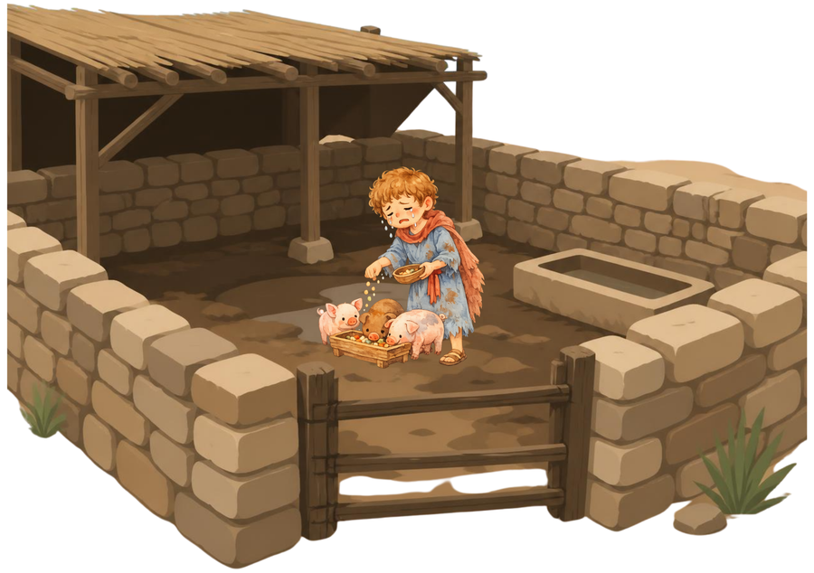
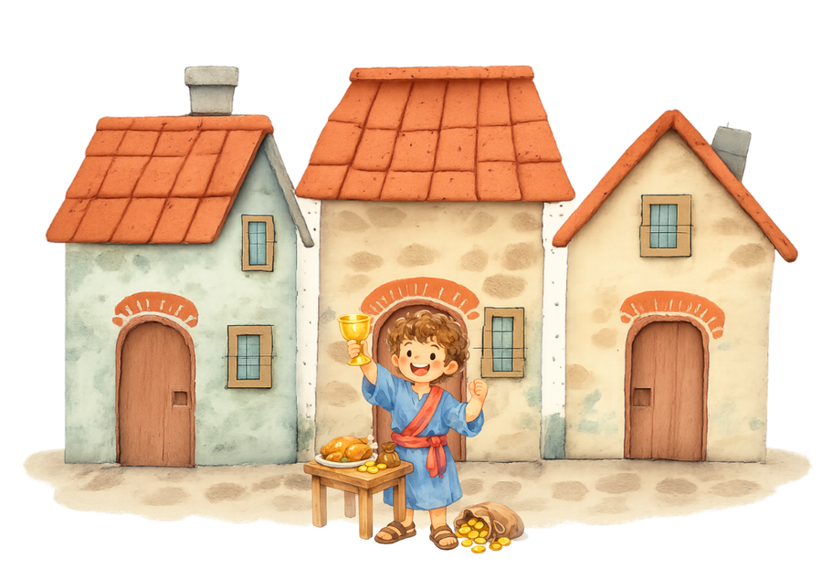
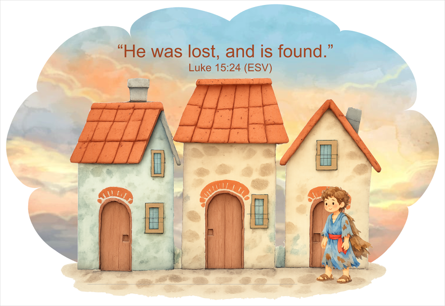
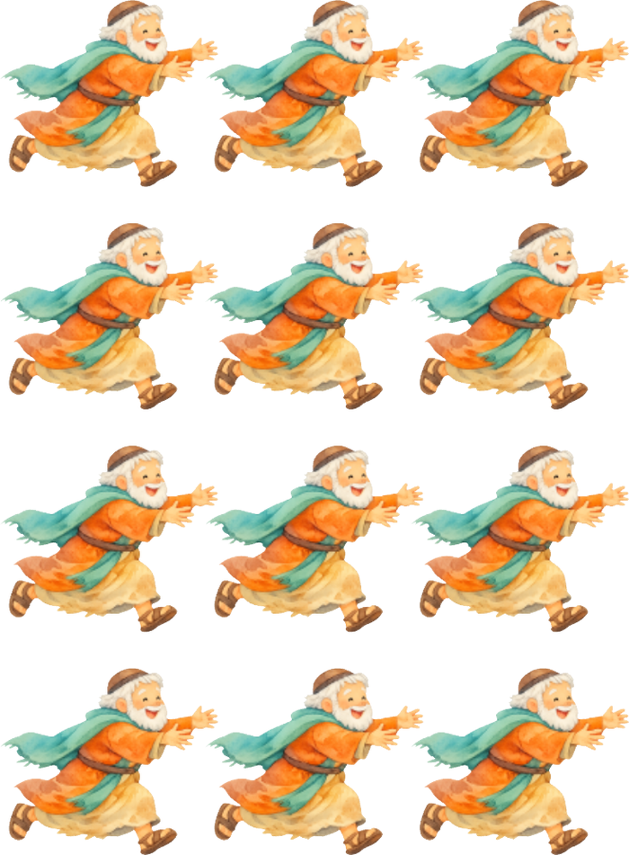
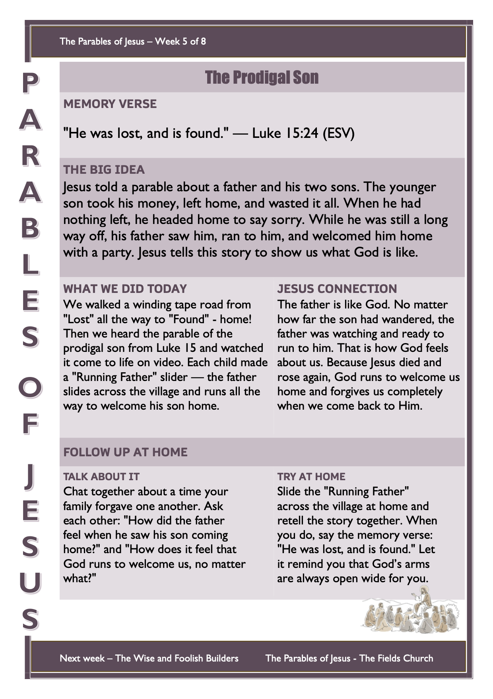

Welcome back to the Parables of Jesus! Remind the children what a parable is: “A parable is a short, everyday story Jesus told to teach us something big and true about God.” So far we’ve learned that God wants His word to grow in us, that Jesus is our rock, that God’s kingdom grows from something tiny, and that Jesus is the Good Shepherd who searches for the one lost sheep. This week Jesus tells a story about a son who ran away from home — and the dad who couldn’t wait to welcome him back.
Get the children thinking about families, forgiveness, and being welcomed home before the story begins.
Bible passage: Luke 15:11–32
Watch the video together, then play the on-screen quiz below.
▶︎ Watch the Bible Story VideoOnline Quiz – The Prodigal Son
Eight questions to recap the video, one at a time — tap an answer, get instant feedback, and keep going until you reach “Well Done!” Great on the big screen for the whole group to play together.
▶︎ Play the Prodigal Son QuizJesus Connection: In this story the father is like God. Even though the son ran away and made a mess of everything, the father was watching and waiting — and the moment he saw his son coming home, he ran to him. That’s exactly how God feels about us. Jesus came to bring lost people home to God, and because He died and rose again, God can run to welcome us, forgive us completely, and celebrate every time someone comes back to Him. You are never, ever too far away for God to welcome you home.
🙏 Prayer
Dear God, thank you that you are like the running father — always watching, always ready to forgive. Thank you that no matter what we have done, we can always come home to you. Thank you for Jesus, who died and rose again to make a way for us to be welcomed into your family forever. Help us to run to you. Amen.
This week the game comes straight after the video and true-or-false. The son had a long, hard journey from the pig pen all the way home. In this game the children walk that winding road from “Lost” to “Found” — one careful step at a time.
Setup
- Lay a long, thin, winding line of masking tape across the floor — add curves and zig-zags to make it nice and wobbly.
- Tape the “Lost” sign to the floor at the start and the “Found” sign at the finish (print both on A4 — below).
How to Play
- Each child starts at the “Lost” sign and walks along the tape line, trying to keep their feet on the line the whole way home.
- If they wobble and step off the line, they go back to the start and try again.
- When they reach the “Found” sign, everyone cheers — “Welcome home!”
- Let everyone have turns; make the line curvier or narrower for older children.
Floor Signs (print on A4)
Print both and tape them to the floor at each end of the tape line.

⬇ Lost sign (PDF)
⬇ Found sign (PDF)The father saw his son a long way off and ran to him. In this craft the father really runs — each child slides him along the village and watches him race all the way to his son!
Before the Session
- Print the village scene (one per child) on A4 card. Along the faint line across the ground, cut a slot — a craft-knife slit works best — for the father to slide through.
- Print the running-father figures — there are 12 fathers on a page, so print only as many pages as your group needs (often just one or two).
- Have craft (paddle-pop) sticks, scissors, sticky tape or glue, and crayons ready.
Materials (per child)
- Village scene printed on A4 cardstock (with the slot cut)
- One running-father figure
- A craft / paddle-pop stick
- Sticky tape or a glue stick
- Crayons or textas
Steps
- Colour the village scene and the running father.
- Cut out the running-father figure.
- Tape or glue the father to the top of a craft stick.
- From behind the scene, push the stick up through the slot so the father stands on the ground.
- Slide the stick along the slot and watch the father run across the village all the way to his son — “Welcome home!”
- Say the verse together: “He was lost, and is found.” — Luke 15:24.
Village Scene (print on A4 card)
One per child. Colour it, then cut a slot along the line across the ground so the father can slide across to his son.

Running-Father Figures (cut out)
There are 12 fathers on the page — print only as many pages as you need for your group (often just one or two). Cut out one father per child to glue onto a craft stick.

Print one per child to send home. Preview below — use the button to download the printable sheet.
